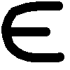

Основные понятия
Пусть на плоскости (х, у) задано множество w (рис. 7а) и в каждой точке этого множества определены две непрерывные функции U=Φ(х, у) и V = Ψ(х, у).
Рассмотрим следующую задачу. Во множестве w найти точку (х*, у*), в которой Φ(x*,y*) = max и Ψ(x*,y*) = max. Обычно это записывается так: Φ(x*,y*) → max и Ψ(x*,y*) → max, (x,y)  w.
Сразу же отметим, что поставленная задача в общем случае решения не имеет. В самом деле, нарисуем на плоскости (U, V) множество всех точек, координаты которых вычисляются по формулам U = Φ(х, у), V = Ψ(х, у), (x,y) w. Из рис. 76 видно, что точка с координатами (Φmax, Ψmax) (точка утопии) лежит вне множества Ω.
Это означает, что наибольшее значение функции U и наибольшее значение функции V достигаются в разных точках. Тем самым, удовлетворить обоим требованиями одновременно невозможно.
Метод (последовательных) уступок является одним из наиболее простых методов решения задачи с двумя критериями. Этот метод состоит в том, что лицо, принимающее решения (ЛПР), работая в режиме диалога с аналитиком-специалистом, последовательно сужает множество точек на границе Парето и в конце концов соглашается остановиться на некоторой компромиссной паре значений критериев.
На рисунке 8 показано, как последовательно, шаг за шагом, всматриваясь в границу Парето, лицо, принимающее решения (руководитель), выходит на компромиссное решение, постепенно уступая своему первоначальному желанию — (Φmax, Ψmax).
1-й шаг, 1-я уступка. Лицо, принимающее решения, соглашается немного ослабить свои изначальные требования по 1-му критерию и заменить Φmax на Φ1. Аналитик-специалист при помощи границы Парето множества Ω (дуги АВ) показывает ему, что соответствующее значение 2-го критерия не может быть больше Ψ1. Скорее всего лицо, принимающее решения, не сочтет полученную пару (Φ1, Ψ1) приемлемой, но согласится немного ослабить свои требования на значение 2-го критерия, что приведет к необходимости 2-го шага.
2-й шаг, 2-я уступка. Лицо, принимающее решения, соглашается заменить Ψmax на Ψ2. Аналитик-специалист при помощи границы Парето множества Ω (дуги АВ) показывает ему, что соответствующее значение 1-го критерия не может быть больше Φ2. Скорее всего лицо, принимающее решения, не сочтет полученную пару (Φ2, Ψ2) приемлемой, но согласится еще немного (по сравнению с Φ1) ослабить свои требования по 1-му критерию, что приведет к необходимости 3-го шага.
Ясно, что с каждым шагом, с каждой уступкой просматриваемая часть границы Парето будет сокращаться
AB  A1B
A1B  A1B2
A1B2  A3B2
A3B2  A3B4
A3B4  A5B4 …
A5B4 … 
(см. рис. 8) и, когда пара (Φn, Ψn), полученная на n-м шаге, покажется лицу, принимающему решения, приемлемой, процесс поиска подойдет к концу. Останется лишь найти решение системы Φ(x,y)=Φn, Ψ(x,y)=Ψn. Полученная в результате пара чисел х = х* и у = у* и будет ответом к исходной задаче, полученным методом уступок.